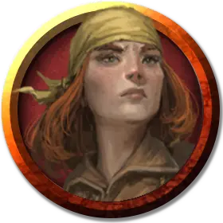

Элайна Сартел
Elaina Sartell
Средний Гуманоид, хаотично-добрый, именной НИП

Класс Доспеха 15 (проклепанная кожа)
Хиты 65 (10к8 + 20)
Скорость 30 футов
| мод | спас | ||
|---|---|---|---|
| СИЛ | 15 | +2 | +4 |
| ЛОВ | 16 | +3 | +5 |
| ТЕЛ | 14 | +2 | +2 |
| мод | спас | ||
|---|---|---|---|
| ИНТ | 14 | +2 | +2 |
| МДР | 11 | +0 | +2 |
| ХАР | 14 | +2 | +2 |
Чувства пассивное Восприятие 10
Языки Все
Опасность 2 (450 опыта)
Бонус мастерства +2
Среда обитания Арктика, Город, Лес, Побережье, Пустыня, Холмы
Особенности
Языки. . Элайна знает два любых языка.
Действия
Мультиатака. Элайна совершает три рукопашные атаки: две скимитаром, и одну кинжалом. Вместо этого Элайна может совершить две дальнобойные атаки кинжалами.
Скимитар. . Рукопашная атака оружием: +5 к попаданию, досягаемость 5 футов, одна цель. Попадание: Рубящий урон 6 (1к6 + 3).
Кинжал. . Рукопашная или дальнобойная атака оружием: +5 к попаданию, досягаемость 5 футов или дистанция 20/60 футов, одна цель. Попадание: Колющий урон 5 (1к4 + 3).
Реакции
Парирование. Элайна добавляет 2 к КД против одной рукопашной атаки, которая должна попасть по ней. Для этого Элайна должна видеть атакующего, и должна использовать рукопашное оружие.
Описание
Капитан Элайна Сартел — командует галеоном «Лунная танцовщица». Она невозмутима — островок спокойствия в море хаоса.